あきらめない
がん治療！
がんの進行や抗がん剤の
副作用で悩むあなたに
全国の医師が実践する
低分子化フコイダンの活用について
福岡県で相談できる医師をご紹介！
資料請求はこちら
Crystal 医科歯科 Clinic International
内科院長
中島 由美 先生
相談者の喜びの声
-
数値が正常範囲に！嬉しくて涙がこぼれました
-
絶望の淵から、希望の光が見えた瞬間
-
ぐっすり眠れる幸せを、久しぶりに実感
-
気持ちが前向きに！毎日が変わった
-
食欲が戻り、もう一度、生きる力が湧いてきた
-
たった3日で咳がピタリ！驚きの変化
-
抗がん剤の副作用が軽減され、笑顔が増えた
「がん」を患いお悩みの方
私たちは、がんの治療でお悩みの方に低分子化フコイダンを活用した統合医療・代替医療の情報提供・ご相談・医師紹介などの活動に取り組んでおります。資料のご希望やフコイダンに関するご質問など、お気軽に当会までご連絡ください。
低分子化フコイダンに関するご質問などにお応えしながら、医師相談のご案内や具体的な取り組み方等を中心にご説明させていただきます。また、低分子化フコイダンの飲用に際しては、飲用中のサポートも含めご質問などにつきましてもしっかりと対応させていただきます。
低分子化フコイダンの
活用について
福岡県で
相談できる医師
中島先生のご紹介
「統合医療と健康を考える会」では
先生に相談されることをお勧めしております。
前向きな気持ちが治療の第一歩です。
Crystal 医科歯科 Clinic International
内科院長
中島 由美 先生
「低分子化フコイダン」の多彩な作用に着目
私は、がん治療における副作用の軽減とQOL（生活の質）の向上を目的に、標準治療と低分子化フコイダンを組み合わせた補完医療に取り組んでいます。
従来のがん治療は、効果が期待される一方で、免疫力の低下や副作用による体力消耗が伴います。
治療を行う中で、患者さまが前向きに治療を続けられるよう、出来る限り副作用を抑え、身体の回復をサポートすることも重要だと考えています。
この低分子化フコイダンは、九州大学の研究において、がん細胞のアポトーシス（細胞の自然死）、免疫力向上や抗がん剤効果を高め副作用を軽減するなどの報告があります。
がん治療は「治療する」だけでなく、患者さまが安心して治療を続けられるよう心身の負担を軽減し、自分らしく生きることも大切です。
当クリニックでは低分子化フコイダンに加え高濃度ビタミンC点滴や分子整合栄養学（オーソモレキュラー）の視点から栄養バランスのアドバイスを組み合わせることによって、あきらめることなく、免疫力を高め毎日を過ごせるよう患者さまに寄り添い医学的視点と温かいケアを両立することで一人ひとりに合った医療を行っています。
些細なことでも、ご遠慮なくご相談ください。
Crystal 医科歯科 Clinic
international
- 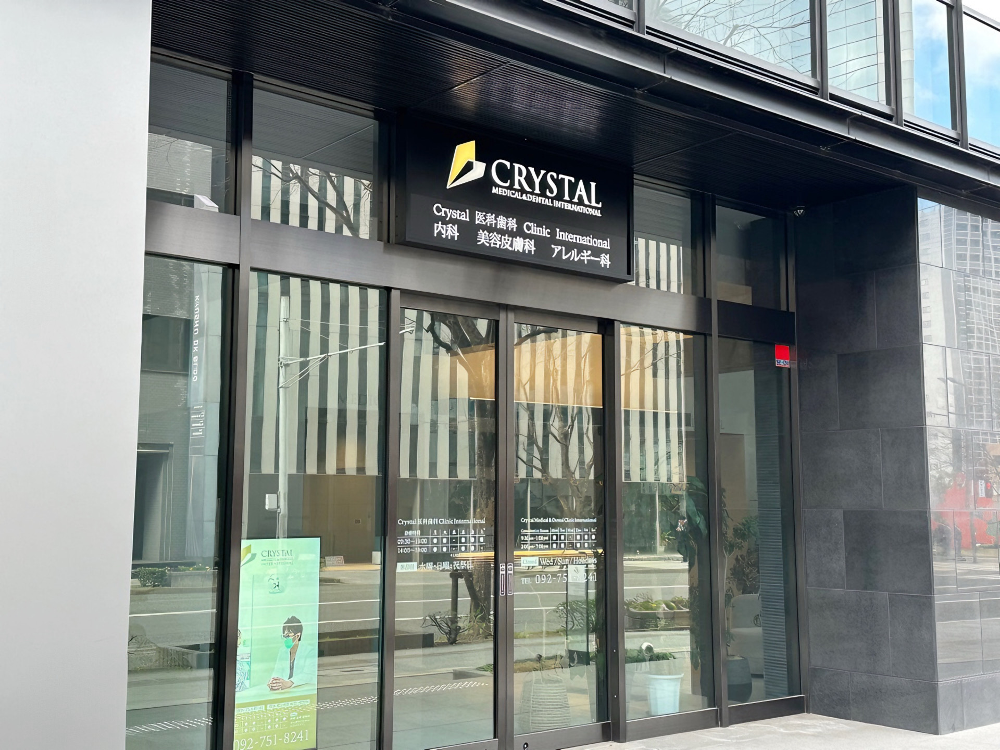
- 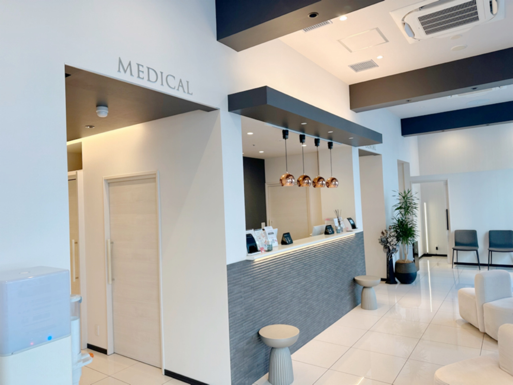
- 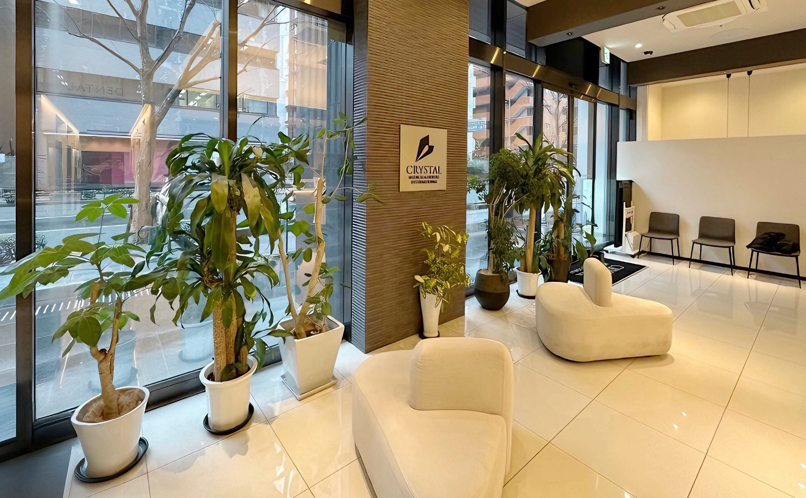
■ 略歴
- 2002年3月
- 金沢医科大学医学部卒業
- 2002年5月
- 金沢医科大学にて小児科・内科勤務
- 2004年4月
- 日本各地の病院で内科・皮膚科を担当
- 2018年2月
- Crystal 医科歯科 Clinic International開業
■ 資格・所属学会
-
内科学会認定医
-
日本内科学会認定抗加齢医学会専門医
-
日本医師会認定産業医
飲用者の声
- 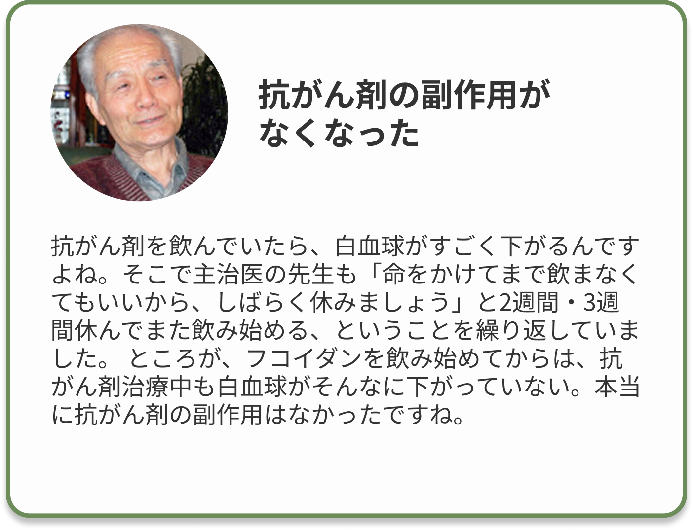
- 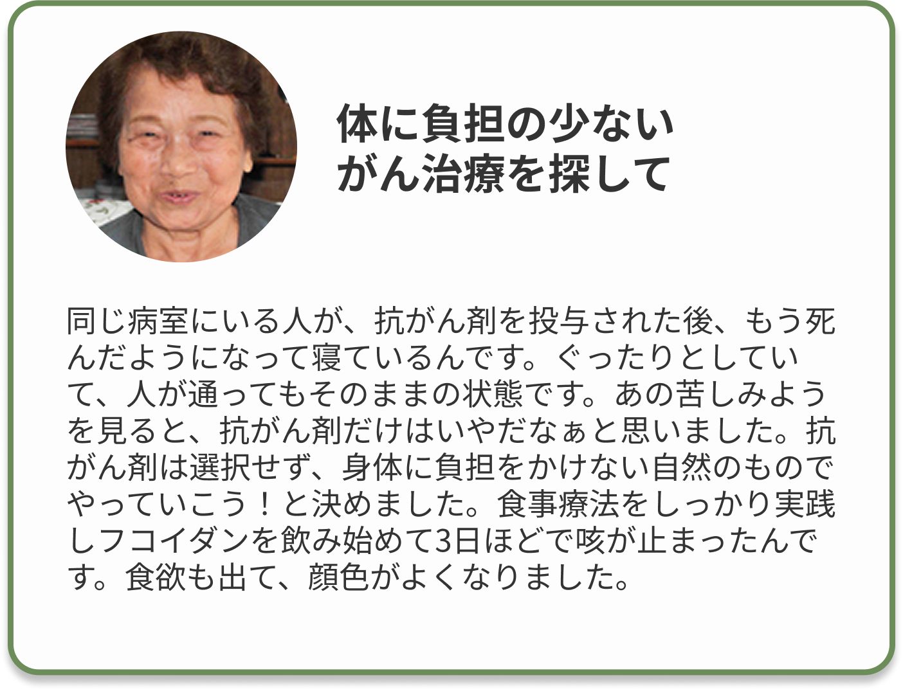
- 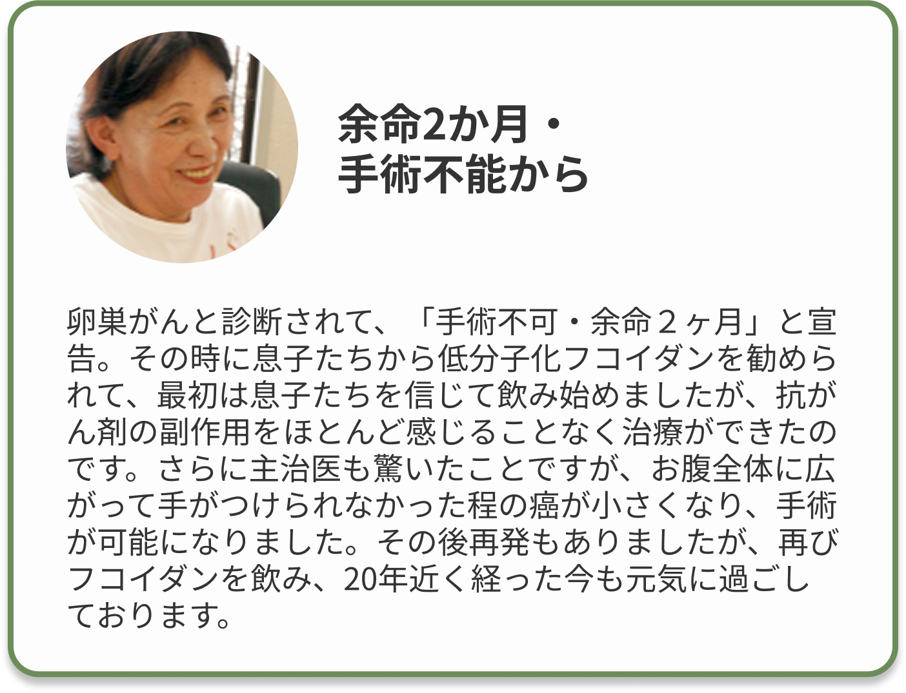
- 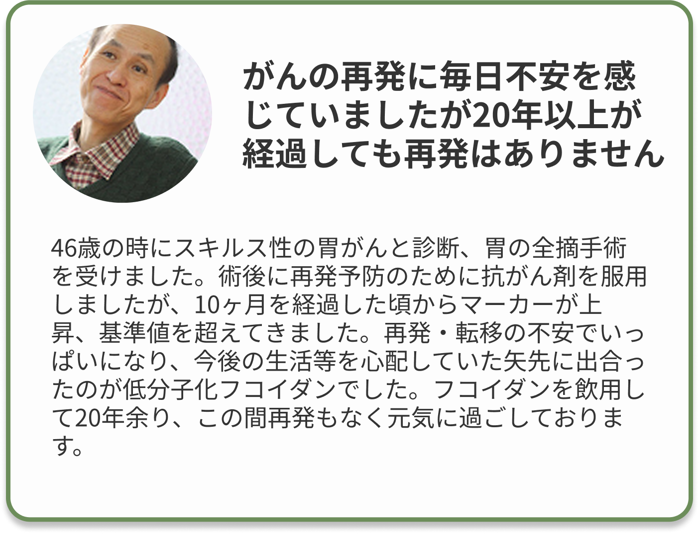

-
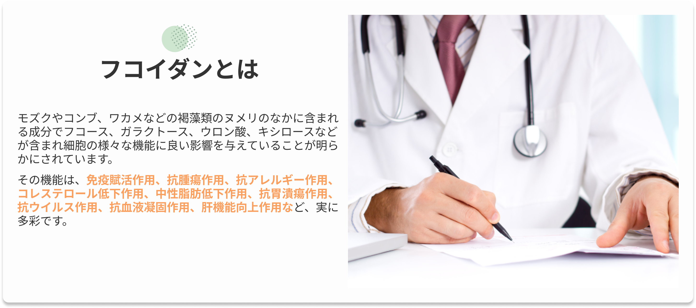 -
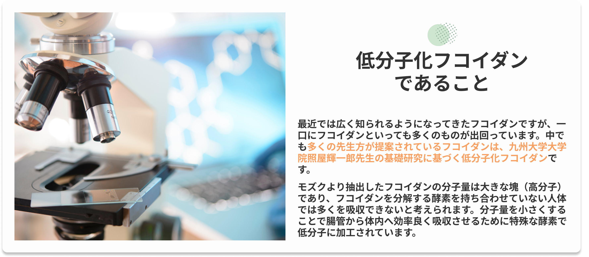 -
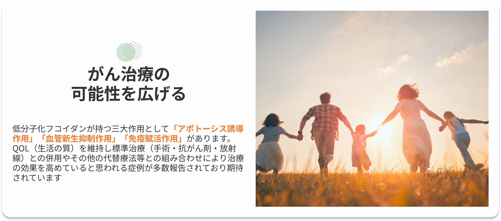 -
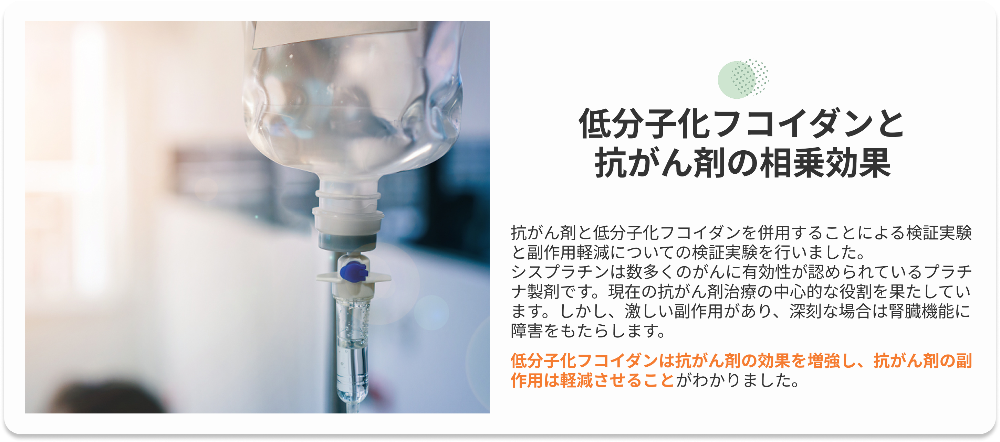
フコイダンの三大作用
世界各国の研究により、これまでに分かっているフコイダンのがんに対して注目されている作用は「アポトーシス誘導作用」「血管新生抑制作用」「免疫力強化作用」の３つです。
-
低分子化フコイダンの特性的な作用として「アポトーシス誘導作用」があります。きわだっているのは、がんだけに特異的に作用し、アポトーシスへと導くことです。
-
がんの特徴の一つに、血管新生作用があります。自分が増殖するための栄養を確保しようと、血管を伸ばすのです。この血管は非常にもろく出血しやすいため、大きながん組織を手術で切除する場合の大きな課題になっています。新生血管を作らせないようにすれば、がんは「兵糧攻め」にあい、増殖できなくなります。
-
免疫力というのは、本来人間が自分の体に備えているものです。体内にがん細胞などの異常なものを見つけたら、攻撃して排除する機能です。
しかし、免疫力が弱っているとその働きが低下し、がんをやっつけるどころか成長を許してしまいます。がんの予防や治療には、免疫力は大変重要なカギを握ります。
医師への相談を
お勧めする理由
-
不安の解消
-
冷静な判断が
できるように -
安心して
治療に専念
できるように -
医師の
意見を参考に
できる -
気軽に
相談できる
環境を作
近隣の医師へ相談
患者さんの身体的な負担と家族の時間的、労力的な負担を少なくすることはとても大切です。
患者さんが受診ができない場合は、ご家族のみの相談も可能です。
※受診が難しい場合は、電話相談に対応していただける医師のご紹介も可能です。
あきらめるのは
まだ早い
-
副作用がつらいので抗がん剤治療をやめたい
-
主治医からもう治療の手立てがないといわれた
-
本当にこの治療法しかないの？
-
治療と併せて何かできることを探している
-
再発が心配です。何かできることはないでしょうか？
“時間は待ってくれません”
がんの早期診断に努め、治癒できるがん治療を目指します。早い段階から取り組むことで治療効果に大きな違いがあります。少しでも「不安」「悩み」を抱えている方はご相談に来てください。
NPO法人 統合医療と健康を考える会では
低分子化フコイダンをご活用いただくにあたり
福岡県で統合医療を実践されている中島先生
に相談されることをお勧めしています。
「相談してよかった…」
「あきらめなくてよかった」
多くの嬉しいお声を頂戴しています、
利用者の「体験」を参考にしてください。
資料請求はこちら
NPO法人統合医療と健康を考える会より資料をお届けします。
ご覧いただき、先生への相談をご検討してください。
九州大学大学院による研究
の論文・学会発表
-
2019
Mar. Drugs
「フコイダン抽出物によるHT1080 線維肉腫細胞の細胞増殖及びプログラム細胞死タンパク質リガンド1 の選択的な抑制」
-
2015
第74回日本癌学会学術総会
酵素消化低分子化フコイダン抽出物と抗がん剤の併用における抗腫瘍作用増強効果
-
2012
第71回日本癌学会学術総会
酵素消化低分子化フコイダン抽出物と抗ガン剤の併用による抗腫瘍増強効果
-
2011
PLoS ONE（プロスワン）誌 論文
フコイダンのアポトーシス誘導寄稿について
-
2015
第69回日本癌学会学術総会
酵素消化低分子化フコイダン抽出物による癌細胞特異的細胞死及び糖鎖合成経路の改変誘導
LMF臨床研究会
2019年9月に国立がん研究センター(東京)にて第13回LMF臨床研究会(低分子化フコイダン研究会)が開催されました
2011年8月川口光彦先生を発起人としてLMF研究会として発足されました。
九州大学大学院 農学研究院 生命機能科学部門システム生物工学講座 細胞制御工学分野 照屋輝一郎 先生と故）白畑實隆先生の長年にわたる基礎研究（がん治療の補助剤として低分子化フコイダンが持つ作用機序の解明）のエビデンスに基づき、臨床症例の情報共有、症例の蓄積と臨床研究を進めていくことを目的とする医師、歯科医師、獣医師、コメディカル、研究者が集う会です。がんの治療では、がんを克服することが目的であることは言うまでもありません。
いかにQOLを維持し日常生活に不自由なく治療を継続していけるかが患者さんとご家族にとっては大きな課題となります。研究会に参加する先生方は、がんや治療の副作用と日々向き合い悩める患者さんに「より有効」に「より安心」して低分子化フコイダンを活用していただくため研究に取り組まれています。
論文・学会発表
-
2019
Odontology
「オーラルヘルスケアに役立つフコイダンの特性」
-
2018
Journal of International Society of Life Information Science
「210症例のガン患者に対する低分子化フコイダンを中心とした統合医療療法による経過報告並びに潰瘍性大腸炎と大腸癌患者における腸内フローラの同定と比較解析の報告」
-
2017
Integrative Cancer Therapies
「進行がん患者のQOL（生活の質）に及ぼすフコイダンの抗炎症効果に関する探索的検討」
-
2015
第74回 日本癌学会学術総会
「進行癌患者における、低分子フコイダンによる抗炎症作用に関する探索的検討」
-
2012
第71回日本癌学会学術総会
「酵素消化低分子化フコイダン抽出物と抗ガン剤の併用による抗腫瘍増強効果」
症状が大きく改善
された方の共通点
それは、患者さん本人の強い決意と周囲の人たちの支えです。生活スタイルや食事など生活習慣の改善や様々な取り組みには「やる気」と「柔軟な思考」がとても大切です。
それらすべてが
「あきらめない気持ち」へつながります。
よくあるご質問
-
Q.
低分子化フコイダンの特徴を教えてください。
A.
もともと分子量が20万～80万の大きさのフコイダンを特殊な酵素を用いて低分子化加工されていることが最大の特徴です。
-
Q.
低分子化フコイダンを飲用した際に副反応などはありますか？
A.
低分子化フコイダンは医薬品ではありませんので、基本的には「副作用」と呼ばれるような反応はございません。飲用された方の中には、「少しお腹がゆるくなった」「尿の色が濃くなった」等、軽微な体調の変化を感じられる場合があります。
※飲用後に体調等の変化がございましたら、当会にご連絡ください。 -
Q.
低分子化フコイダンは保険の対象になりますか？
A.
低分子化フコイダンは医薬品ではなく、いわゆる健康食品ですので社会保険等の公的な健康保険の対象ではありません。
-
Q.
活用できないがんの種類はありますか？
A.
部位に関係なく活用されています。
-
Q.
抗がん剤や放射線治療との併用は可能でしょうか？
A.
九州大学大学院の基礎研究では、治療を妨げることなく副作用が緩和されていることが日本癌学会学術総会をはじめ様々な学会や論文誌で発表されており、免疫力を高めることも期待されます。
また、漢方など他の補完代替療法と併せて多くの方が活用されています。
※治験等で特定の食品やサプリメント等の飲用を制限されている方は、一度当会にご相談ください。 -
Q.
入院や通院が必要ですか？
A.
入院や通院が必要ということはありません。低分子化フコイダンは健康食品ですのでご自身の判断で活用していただけます。当会では、ご協力いただいている医師にご相談しながら活用することをお薦めしています。
※飲用後の経過等についても相談しながら取り組めますので、より安心してご活用していただけます。 -
Q.
クリニックを受診することができないのですが、どうしたらよいでしょうか？
A.
患者さん自身が受診できない場合は、ご家族によるご相談も可能です。
また、遠方で受診できない場合は電話で相談ができる医師をご紹介させていただきます。まずは当会にお気軽にお問いわせください。
NPO法人
統合医療と健康を考える会
について
NPO法人 統合医療と健康を考える会では、がん患者さん・ご家族に向け抗がん剤との相乗効果や副作用の軽減が期待されるサプリメント「低分子化フコイダン」の活用をご提案しています。
低分子化フコイダンをお考えの方は、医師に相談されることをお勧めしています。お届けする資料をご覧いただき、医師の紹介などお問い合わせください。
-
団体名称
特定非営利活動法人 統合医療と健康を考える会
-
主たる事務所
鹿児島市上之園町21-4 ザ・サンクチュアリー上之園1F
-
理事長
益山司
-
設立
平成16年8月